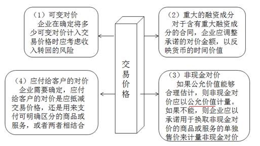

Accounting
会计基础知识
会计科目
| 其他应收款 |
| 坏账准备 |
| 原材料 |
| 库存商品 |
| 存货跌价准备 |
| 持有至到期投资 |
| 可供出售金融资产 |
| 长期股权投资 |
| 长期股权投资减值准备 |
| 投资性房地产 |
| 固定资产 |
| 累计折旧 |
| 固定资产减值准备 |
| 在建工程 |
| 无形资产 |
| 累计摊销 |
| 无形资产减值准备 |
| 其他应付款 |
| 长期借款 |
| 预计负债 |
| 应付债券 |
一些其他概念关于盘盈&盘亏
第三章 存货
存货成本的结转
1.生产领用
借：制造费用
贷：周转材料——包装物
2.出借包装物及随同产品出售不单独计价的包装物
借：销售费用
贷：周转材料——包装物
因为出售却没有收入，且在销售环节所发生，所以记入销售费用3.出祖包装物及随同产品出售单独计价的包装物
借：其他业务成本
贷：周转材料——包装物
*没有形成收入的，包装物摊销费用记入销售费用；有收入的记入其他业务收入，成本记入其他业务成本第四章 固定资产
确认与初始计量
高危行业企业按照国家规定提取安全生产费
| 提取安全费用时 | 借：生产成品（或当期损益） 贷：专项储备 |
| 使用提取的安全费 属于费用性支出，直接冲减专项储备 |
借：专项储备 贷：银行存款 |
| 使用提取的安全费 形成固定资产 |
借：在建工程 应交税费 贷：银行存款 应付职工薪酬 借：固定资产 贷：在建工程 借：专项储备 贷：累计折旧 |
“专项储备”科目期末余额在资产负债表所有者权益项目下“其他综合收益”和“盈余公积”之间增设“专项储备”项目反映。
存在弃置费用东奥视频链接
借：固定资产
贷：在建工程
预计负债
借：财务费用（期初预计负债摊余成本*实际利率）
贷：预计负债
借：预计负债
贷：银行存款
解释公告第6号：（1）对于预计负债减少，以固定资产账面价值为限扣减固定资产成本，超出部分确认当期损益。
（2）对于预计负债增加，增加该固定资产成本。
例：固定资产原价50 000万元，账面价值12 500万元，预计负债20 000万元。X日重新确认预计负债现值15 000万元
则：预计负债调减 = 20000-15000 = 5000万元，调整固定资产账面价值 = 12500-5000 = 7500万元
具体例题 轻1 p.47
后续计量
固定资产折旧
1.固定资产按月计提折旧，当月增加的固定资产，当月不计提，下月起计提折旧；当月减少的固定资产，当月计提折旧，下月起不计提。与无形资产相反
2.尚未办理竣工决算的固定资产，按照估计价值确定成本并计提折旧；待办理竣工决算后按实际成本调整原暂估价值，不需要调整已计提折旧额。
3.更新改造过程中，将账面价值转入在建工程，不计提折旧
4.定期大修理期间照提折旧
折旧方法
1.年限平均法
年折旧额 = （原价-预计净残值）／预计使用年限
2.工作量法
单位工作量折旧额 = （原价-预计净残值）／预计总工作量
3.双倍余额递减法
年折旧额 = 期初固定资产净值*2／预计使用年限
固定资产净值 = 原价 - 累计折旧；最后两年改为年限平均法
4.年数总和法
年折旧额 = （原价-预计净残值）* 年折旧率
年折旧率 = 剩余可使用年数／SUM（使用年限）
固定资产处置
处置的账务处理
| 出售、转让 | 报废、损毁 | 持有待售 |
|---|---|---|
|
借：固定资产清理 累计折旧 贷：固定资产 新增：产生利益或损失转入处置资产损益科目，记入当期损益，影响营业利润。 这里的转让包括了非货币性资产交换和债务重组等。 产生处置净损失的，借记“资产处置损益”科目，贷记“固定资产清理”科目；如为净收益，借记“固定资产清理”科目，贷记“资产处置损益”科目。 |
借：固定资产清理 累计折旧 营业外支出 贷：固定资产 营业外收入 |
持有待售为新增章节 |
持有待售固定资产
满足条件：
1.企业已经就处置该非流动资产作出决议。
2.企业与受让方签订了不可撤销的转让协议。
3.该项转让在一年内完成。
入账价值 = 固定资产账面价值 与 公允价值减去处置费用 孰低计量
原账面价值高于后者的差额，作为资产减值损失记入当期损益。
注意⚠️ 持有待售固定资产作为流动资产列示
若某项资产被归为持有待售，但后来不再满足条件时，企业应当停止将其归为持有待售，并按照下列金额较低者计量：
1.按照之前的账面价值，假定没有归为持有待售情况下原应确认但折旧／摊销或减值进行调整后的金额
*意思就是，从划分日至不再符合确认条件期间的折旧需要补上（追溯）
2.决定不再出售之日的可收回金额
固定资产清查
一、盘盈
作为前期差错处理
借：固定资产
贷：以前年度损益调整
借：以前年度损益调整
贷：盈余公积
利润分配——未分配利润
第五章 无形资产
内部研究开发
内部研究开发支出会计处理


费用化支出期末无余额，资本化支出余额记入资产负债表中的“开发支出”项目
第六章 投资性房地产
投资性房地产的范围和特征
投资性房地产的范围
| 范围 | 注意问题 |
|---|---|
| 已出租的土地使用权 | 计划出租但尚未出租的土地使用权不属于此类 |
| 持有并准备增值后转让的土地使用权 | 这种不多 |
| 已出租的建筑物 | 1.企业拥有产权并以经营租赁方式出租的建筑物。 2.以经营租赁方式租入再转租的不属于此类。（无产权） 3.空置或在建建筑物，企业管理当局作出正式书面决议， 将其用于经营出租且意图短期内不会变化，也应视为投资性房地产。 待出租的建筑物在此之前作为固定资产或存货核算。 |
投资性房地产的后续计量
两种计量模式注意⚠️同一企业只能采用一种模式对所有投资性房地产进行后续计量，不得同时采用两种计量模式。
| 项目 | 成本模式 | 公允价值模式 |
|---|---|---|
| 初始确认 | 记入“投资性房地产”科目 | 记入“投资性房地产——成本”科目 |
| 折旧或摊销 |
同固定／无形资产处理原则 借：其他业务成本 贷：投资性房地产累计折旧／摊销 |
不计提折旧或摊销 |
| 减值 |
按《企业会计准则第8号——资产减值》计提 借：资产减值损失 贷：投资性房地产减值准备 |
不计提减值 |
| 收入 |
借：银行存款 贷：其他业务收入 应交税费——应交增值税（销项税额） |
借：银行存款 贷：其他业务收入 应交税费——应交增值税（销项税额） |
| 公允价值变动 | 不确认 |
确认并记入“公允价值变动损益”科目 公允价值上升： 借：投资性房地产——公允价值变动 贷：公允价值变动损益 公允价值下降作相反分录 |
| 转换 | 可转为公允价值模式 | 不可转为成本模式 |
| 处置 | 冲减投资性房地产账面价值 | 冲减投资性房地产账面价值且转销公允价值变动损益和其他综合收益 |
计量模式的变更
成本模式
arrow_forward
公允价值模式
属于会计政策变更
借：投资性房地产——成本（变更日公允价值）
投资性房地产累计折旧／摊销
投资性房地产减值准备
贷：投资性房地产（原价）
利润分配——未分配利润
盈余公积
投资性房地产的转换和处置
投资性房地产的转换
| 投资性——>非投资性 | |||
|---|---|---|---|
| 成本模式 | 固定资产 | 按照账面价值转 |
借：固定资产 投资性房地产累计折旧 投资性房地产减值准备 贷：投资性房地产 累计折旧 固定资产减值准备 |
| 开发产品 |
借：开发产品 投资性房地产累计折旧/摊销 投资性房地产减值准备 贷：投资性房地产 |
||
| 公允价值 | 固定资产 | 按照公允价值转 |
借：固定资产 贷：投资性房地产——成本 投资性房地产——公允价值变动 公允价值变动损益 |
| 开发产品 |
借：开发产品 贷：投资性房地产——成本 投资性房地产——公允价值变动 公允价值变动损益 |
||
| 非投资性——>投资性 | |||
|---|---|---|---|
| 成本模式 | 固定资产 | 按照账面价值转 |
借：投资性房地产 累计折旧／摊销 固定／无形资产减值准备 贷：固定／无形资产 投资性房地产累计折旧 投资性房地产减值准备 |
| 开发产品 |
借：投资性房地产 存货跌价准备 贷：开发产品 |
||
| 公允价值 | 固定资产 | 按照公允价值转 借方差额计公允价值变动损益，贷方差额计其他综合收益 |
借：投资性房地产——成本 累计折旧／摊销 固定／无形资产减值准备 公允价值变动损益 贷：固定／无形资产 其他综合收益 |
| 开发产品 |
借：投资性房地产——成本 存货跌价准备 公允价值变动损益 贷：开发产品 其他综合收益 |
||
投资性房地产的处置
采用公允价值模式计量：
借：银行存款
贷：其他业务收入
应交税费——应交增值税（销项税额）
借：其他业务成本
贷：投资性房地产——成本
——公允价值变动
借：其他综合收益
贷：其他业务成本
借：公允价值变动损益
贷：其他业务成本
其他业务成本反映的其实是历史成本，所以要将公允价值变动损益和其他综合收益冲回。
第七章 长期股权投资与合营安排
一、长期股权投资的确认与初始计量
权益结合法
适用于同一控制下企业合并，以前会计基础保持不变，资产和负债继续按其原来的账面价值记录。
1.合并方以支付现金、转让非现金资产或承担债务方式作为合并对价
借：长期股权投资（被合并方所有者权益在最终控制方合并财务报表中的账面价值的份额+包括最终控制方收购被合并方而形成的商誉）
贷：负债（承担债务账面价值）
资产（投出资产账面价值）
资本公积——资本溢价或股本溢价（差额，可能在借方）
借：管理费用（审计、法律服务等相关费用）
贷：银行存款
2.合并方以发行权益性证券作为合并对价
借：长期股权投资（被合并方所有者权益在最终控制方合并财务报表中的账面价值的份额+包括最终控制方收购被合并方而形成的商誉）
贷：股本（发行股票的数量×每股面值）
资本公积——股本溢价（差额 = 长期股权投资-股本）
借：资本公积——股本溢价（权益性证券发行费用）
贷：银行存款
3.企业通过多次交换交易，分步取得股权最终形成同一控制下控股合并
合并日初始投资成本 = 相对于最终控制方而言的被合并方所有者权益账面价值的份额 + 商誉
新增投资部分 = 合并日初始投资成本 - 原股权投资于合并日的账面价值
新增部分与取得新增部分付出对价的差额，记资本公积
购买法
用于非同一控制下企业合并，以合并成本（公允）作为长期股权投资初始投资成本。
个别报表中，不与所占份额公允价值进行比较，直接以付出对价公允价值为基础入账
1.一次交易实现的企业合并
以购买方支付的现金/非现金资产、发行或承担的债务、发行的权益性证券等在购买日的公允价值作为长期股权投资的初始投资成本。
借：长期股权投资
累计折旧/摊销
贷：固定/无形资产 + 资产处置损益
其他债权投资(金融工具)/营业收入(存货)
借：管理费用（审计、法律服务等相关费用）
贷：银行存款
2.企业通过多次交换交易分步实现非同一控制下控股合并
①原投资为长期股权投资
购买日长期股权投资初始投资成本 = 原投资账面价值 + 新增股份公允价值。
②原投资为可供出售金融资产或交易性金融资产
购买日长期股权投资初始投资成本 = 原投资公允价值 + 新增股份公允价值
【提示】项目不变的话与历史成本有关，用账面价值；项目变了的话视同出售。
3.或有对价
借：以公允价值计量且其变动计入当期损益的金融资产
贷：公允价值变动损益
投资相关交易费用的处理
|
项目 |
直接相关的费用、税金 |
发行权益性证券支付的手续费、佣金等 |
发行债务性证券支付的手续费、佣金等 |
|
|
长期股权投资 |
同一控制 |
计入管理费用 |
应自权益性证券的溢价发行收入中扣除，溢价收入不足冲减的，应冲减盈余公积和未分配利润 |
计入应付债券初始确认金额（其中债券若为折价发行，该部分费用增加折价的金额；若为溢价发行应减少溢价的金额） |
|
非同一控制 |
计入管理费用 |
|||
| 不形成控股合并 | 计入成本 | |||
| 交易性金融资产 | 计入投资收益 | |||
| 持有至到期投资 | 计入成本 | |||
| 可供出售金融资产 | 计入成本 | |||
二、长期股权投资的后续计量
成本法
适用范围：投资方能够对被投资单位实施控制的长期股权投资应当采用成本法核算。
被投资单位宣告发放现金股利
借：应收股利（享有被投资单位宣告发放的现金股利或利润）
贷：投资收益
计提减值准备
借：资产减值损失
贷：长期股权投资减值准备
权益法
根据投资企业享有被投资单位所有者权益份额的变动对投资的账面价值进行调整
适用范围：共同控制的合营企业；重大影响的联营企业。
1.科目设置：
长期股权投资——投资成本（投资时点）
——损益调整（持有期间被投资单位净损益及利润分配变动）
——其他综合收益（投资后其他综合收益变动）
——其他权益变动（投资后其他）
【提示】
1.初始投资成本 = 付出对价公允，如果小于可辨认公允资产，那叫调整后的初始投资成本。
2.商誉不在个别报表中确认，只能体现在长期股权投资中。
2.投资损益的确认
实现净利润
借：长期股权投资——损益调整
贷：投资收益
损失作相反分录
3.被投资单位宣告分配现金股利或利润的处理
借：应收股利
贷：长期股权投资——损益调整
借：银行存款
贷：应收股利
核算方法的转换
| 转换形式 | 个别报表 | 合并报表 | |
|---|---|---|---|
| 上升 | 1. 公允价值 ———> 权益法 | 原投资调整到公允价值 | |
| 2. 权益法 ————> 成本法 | 原投资保持账面价值 | 原投资调整到公允价值 | |
| 3. 公允价值 ———> 成本法（非同一控制） | 原投资调整到转换日公允价值 | 因个别报表原投资公允价值与账面价值相等，所以无需调整 | |
| 下降 | 4. 成本法 ————> 权益法 | 剩余投资追溯调整权益法账面价值 | 剩余投资调整到公允价值 |
| 5. 权益法 ————> 公允价值 | 剩余投资调整到公允价值 | ||
| 6. 成本法 ————> 公允价值 | 剩余投资调整到公允价值 | 无需调整剩余投资价值 | |
三、合营安排
联营企业关键：重大影响
1.在董事会或类似权力机构中派有代表。
2.参与被投资单位财务和经营政策制定过程。
3.与被投资单位之间发生重要交易。
4.向被投资单位派出管理人员。
5.向被投资单位提供关键技术资料。
合营企业
1.各参与方均受到合营安排的约束。
2.两个或以上参与方对该安排实施共同控制（唯一组合）。
3.任何一个参与方不能单独控制该安排。
合营安排的分类
共同经营：享有资产，承担负债
合营企业：只享有净资产第八章 资产减值
资产减值损失的确认与计量
| 资产类别 | 减值后计量基础 | 减值是否可以转回 |
|---|---|---|
| 存货 | 可变现净值 | 可以 |
| 固定资产 | 可收回金额 | 不可以 |
| 投资性房地产（成本模式） | 可收回金额 | 不可以 |
| 长期股权投资 | 可收回金额 | 不可以 |
| 无形资产 | 可收回金额 | 不可以 |
| 开发支出 | 可收回金额 | 不可以 |
| 商誉 | 可收回金额 | 不可以 |
| 持有至到期投资 | 未来现金流量现值 | 可以 |
| 货款和应收款项 | 未来现金流量现值 | 可以 |
| 可供出售金融资产 | 公允价值 | 可以 |
| 递延所得税资产 | 未来应纳税所得额 | 可以 |
预计未来现金流量
内容
资产持续使用过程中预计产生的现金流入
实现资产持续使用过程中产生的现金流入所必需的预计现金流出
外币预计
按以下顺序计算
（1）以外币（结算货币）表示的未来现金流量现值 = ∑[该资产所产生的未来现金流量(结算货币)×该结算货币适用的折现率的折现系数]
（2）以记账本位币表示的现值 = 以外币（结算货币）表示的未来现金流量现值×计算资产未来现金流量现值当日的即期汇率
（3）以记账本位币表示的现值与资产公允价值减去处置费用后的净额相比较,较高者为其可收回金额,根据可收回金额与资产账面价值相比较,确定是否需要确认减值损失以及确认多少减值损失。
考虑因素
| 考虑 | 不考虑 |
|---|---|
| 当前状况为基础预计资产未来现金流量 | 筹资活动和所得税收付产生的现金流量 |
| 通货膨胀因素的考虑应当和折现率相一致 | 可能会发生的、尚未作出承诺的重组事项或与资产改良有关的预计未来现金流量 |
| 涉及内部转移价格的需要作调整 |
其他资产减值处理
总部资产的减值测试

资产组减值二次分摊例题 书P.167-168
存货跌价准备的确认和计量

存货跌价准备转回
借：存货跌价准备
贷：资产减值损失
存货跌价准备结转
借：主营业务成本
贷：库存商品
借：存货跌价准备
贷：主营业务成本
存货的可变现净值考虑因素
1.以取得的确凿证据为基础
2.持有存货的目的
3.资产负债表日后事项的影响
第九章 负债
可转换公司债券
（1）发行可转换公司债券时：
借：银行存款
贷：应付债券——可转换公司债券（面值）
——可转换公司债券（利息调整）（也可能在借方）
其他权益工具（权益成份的公允价值）
（2）转换股份前：
可转换公司债券的负债成份，在转换为股份前，其会计处理与一般公司债券相同，即按照实际利率和摊余成本确认利息费用，按面值和票面利率确认应付利息，差额作为利息调整进行摊销。
（3）转换股份时：
借：应付债券——可转换公司债券（面值、利息调整）（账面余额）
其他权益工具（转换部分权益成分的公允价值）
贷：股本（股票面值×转换的股数）
资本公积——股本溢价（差额）
第十章 职工薪酬
短期薪酬——非货币性福利
非货币性福利应当按照公允价值计量。公允价值不能可靠取得的，可以采用成本计量。 短期薪酬包括：
| 自产产品 | 外购商品 | 房屋资产 | 支付了补贴的商品或服务 |
|---|---|---|---|
|
1）决定发放非货币性福利 借：生产成本 管理费用 在建工程 研发支出等 贷：应付职工薪酬——非货币性福利 2）将自产产品实际发放时 借：应付职工薪酬——非货币性福利 贷：主营业务收入 应交税费——应交增值税（销项税额） 借：主营业务成本 贷：库存商品 |
1）购入时 借：库存商品等 应交税费——应交增值税（进项税额） 贷：银行存款 2）决定发放非货币性福利时 借：生产成本 管理费用 在建工程 研发支出等 贷：应付职工薪酬——非货币性福利 3）将外购商品实际发放时 借：应付职工薪酬——非货币性福利 贷：库存商品等 应交税费——应交增值税（进项税额转出） |
1）企业拥有的房屋等资产 借：管理费用等 贷：应付职工薪酬——非货币性福利 借：应付职工薪酬——非货币性福利 贷：累计折旧 2）租赁住房等资产 借：管理费用等 贷：应付职工薪酬——非货币性福利 借：应付职工薪酬——非货币性福利 贷：其他应付款 |
规定服务年限： 1）购入住房时 借：固定资产 贷：银行存款 2）出售住房时 借：银行存款 长期待摊费用 贷：固定资产 3）摊销长期待摊费用时 借：管理费用等 贷：应付职工薪酬——非货币性福利 借：应付职工薪酬——非货币性福利 贷：长期待摊费用 未规定服务年限的记入资产成本或当期损益 |
离职后福利——设定收益计划
记入当期损益：
①当期服务成本
②过去服务成本(受益计划修改导致的计划义务现值增加或减少)
③结算利得和损失
④设定受益计划净负债或净资产的利息净额。
记入其他综合收益：
设定受益净负债或净资产的重新计量，且在后续期间不应重分类计入损益。
内容包括：
（1）精算利得和损失
（2）计划资产回报
（3）资产上限影响的变动
第十一章 借款费用
借款费用的确认
| 借款费用开始资本化的时点 | |
|---|---|
| 资产支出已经发生 | 包括支付现金、转移非现金资产和承担带息债务形式发生的支出，赊购形式发生的支出不属于资产支出 |
| 借款费用已经发生 | 已经发生了专门借款费用或者占用了一般借款的借款费用 |
| 为使资产达到预定可使用或者可销售状态所必要的购建或者生产活动已经开始 | 是指符合资本化条件的资产的实体建造或者生产工作已经开始 |
利息费用的计算
| 专门借款 | 一般借款 | |
|---|---|---|
| 资本化 | 资本化利息费用金额 = 资本化期间专门借款本金发生的利息金额 - 资本化期间闲置资金的投资收益或利息收入 （与专门借款的具体支出数无关，资本化期间发生的全部利息费用均资本化） |
资本化利息费用金额 = 累计资产支出超过专门借款部分的资产支出加权平均数 × 一般借款资本化率 |
| 费用化 | 费用化利息费用金额 = 费用化期间专门借款本金发生的利息金额 - 费用化期间闲置资金的投资收益或利息收入 | 费用化利息费用金额 = 一般借款利息总额 － 一般借款资本化利息费用 － 一般借款闲置资金的投资收益或利息收入（闲置资金收益全部冲减费用化利息费用金额） |
第十二章 股份支付
主要类型
权益结算
以股份（如限制性股票）或其他权益工具（如股票期权）作为对价进行结算的交易
应按授予日权益工具的公允价值计量，不确认其后续公允价值变动
授予日不做处理，但处理时按照授予日公允价值计量
企业应在等待期内的每个资产负债表日，以对可行权权益工具数量的最佳估计数为基础， 按照权益工具在授予日的公允价值，将当期取得的服务计入相关资产成本或当期费用，同时计入资本公积中的其他资本公积。
现金结算
以股份或其他权益工具为基础计算的交付现金或其他资产义务的交易
授予日不做处理，但每个资产负债表日按公允价值计量，变动记入公允价值变动损益
股份支付的处理
| 授予日 | 除了立即可行权的股份支付外，企业在授予日均不做会计处理。 |
| 等待期内每个资产负债表日 |
①对于权益结算的涉及职工的股份支付，应当按照授予日权益工具的公允价值计入成本费用和资本公积（其他资本公积），不确认其后续公允价值变动。
②对于现金结算的涉及职工的股份支付，应当按照每个资产负债表日权益工具的公允价值重新计量，确定成本费用和应付职工薪酬。 |
| 可行权日之后 |
①权益结算的股份支付，不再进行调整。
②对于现金结算的股份支付，企业在可行权日之后不再确认成本费用，负债（应付职工薪酬）公允价值的变动应当计入当期损益（公允价值变动损益）。 |
| 回购股份进行职工期权激励 |
权益结算的股份支付的会计处理 ①回购股份 ②确认成本费用 ③职工行权 |
限制性股票分配现金股利的会计处理
【关键点】预计未来可解锁，现金股利通过“利润分配”科目核算； 现金股利可撤销，应减少其他应付款。
| 预计未来可解锁 | 预计未来不可解锁 | |
|---|---|---|
| 现金股利可撤销 |
借：利润分配——应付现金股利或利润 同时，按分配的现金股利金额 实际支付时 |
借：其他应付款——限制性股票回购义务 实际支付时 后续信息表明不可解锁限制性股票的数量与以前估计不同的，应当作为会计估计变更处理，直到解锁日预计不可解锁限制性股票的数量与实际未解锁限制性股票的数量一致 |
| 现金股利不可撤销 |
借：利润分配——应付现金股利或利润 实际支付时 |
借：管理费用 实际支付时 后续信息表明不可解锁限制性股票的数量与以前估计不同的，应当作为会计估计变更处理，直到解锁日预计不可解锁限制性股票的数量与实际未解锁限制性股票的数量一致 |
其他关于限制性股票的讲解在第二十八讲
集团股份支付
①结算企业（母公司）以其本身权益工具结算，接受服务企业（子公司）没有结算义务
1）结算企业
借：长期股权投资
贷：资本公积——其他资本公积（按权益结算股份支付计量原则确认资本公积）
2）接受服务企业
借：管理费用等
贷：资本公积——其他资本公积（按权益结算股份支付计量原则确认资本公积）
3）合并财务报表中应编制如下抵销分录
借：资本公积
贷：长期股权投资
【关键点】合并财务报表中反映的是，相当于母公司授予母公司职工权益结算股份支付的结果。
②结算企业（母公司）不是以其本身权益工具结算，接受服务企业（子公司）没有结算义务
1）结算企业
借：长期股权投资
贷：应付职工薪酬（按现金结算股份支付计量原则确认应付职工薪酬）
2）接受服务企业
借：管理费用等
贷：资本公积——其他资本公积（按权益结算股份支付计量原则确认资本公积）
3）合并财务报表中应编制如下抵销分录
借：资本公积
管理费用等（差额，也可能在贷方）
贷：长期股权投资
【关键点】合并财务报表中反映的是，相当于集团会计主体授予集团会计主体职工现金结算股份支付的结果，合并财务报表中最终体现的是 按现金结算股份支付计量原则确认的应付职工薪酬和管理费用，因接受服务企业确认的管理费用是按权益结算股份支付计量原则确定的，所以合并财务报表抵销分录中会出现差额，该差额计入管理费用。
③结算企业和接受服务企业均为母公司，且授予本公司职工的是其本身权益工具
借：管理费用等
贷：资本公积——其他资本公积（按权益结算股份支付计量原则确认资本公积）
④结算企业和接受服务企业均为母公司，且不是以其本身权益工具结算
借：管理费用等
贷：应付职工薪酬（按现金结算股份支付计量原则确认应付职工薪酬）
第十三章 或有事项
预计负债的确认条件
（1）该义务是企业承担的现时义务
（2）履行该义务很可能(>50%)导致经济利益流出企业
（3）该义务的金额能够可靠地计量。
【提示】如果或有事项确认负债的三个条件没有同时满足时，则属于或有负债。
最佳估计数的确定
预期可获得补偿的处理
企业清偿预计负债所需支出全部或部分预期由第三方补偿的，补偿金额只有在基本确定能够收到时才能作为资产单独确认，确认的补偿金额不应超过预计负债的账面价值。
【提示1】或有事项确认为资产的前提条件是或有事项已经确认为负债。
【提示2】或有事项确认为资产通过“其他应收款”科目核算，但不能冲减预计负债的账面价值。
没有预计负债，就没有或有资产。
1.或有事项确认负债
借：营业外支出
管理费用（诉讼费）
贷：预计负债
2.或有事项确认资产
借：其他应收款
贷：营业外支出
第十四章 金融工具
金融资产的分类
企业应当根据其管理金融资产的业务模式和金融资产的合同现金流量特征，将金融资产划分为以下三类：
（1）以摊余成本计量的金融资产；
（2）以公允价值计量且其变动计入其他综合收益的金融资产；
（3）以公允价值计量且其变动计入当期损益的金融资产。
企业应当结合自身业务的特点和风险管理要求，对金融负债进行重分类。
【提示】衍生工具的特征：
（1）其价值变动取决于标的变量的变化
（2）不要求初始净投资，或者初始净投资很小
金融资产分类与计量—决策树

【提示】权益工具不收利息，通不过合同现金流量测试
金融负债和权益工具的区分
| 金融负债 | 权益工具 |
|---|---|
| 向其他单位交付现金或其他金融资产的合同义务 | 没有向其他单位交付现金或其他金融资产的合同义务 |
| 在潜在不利条件下，与其他单位交换金融资产或金融负债的合同义务 | 没有在潜在不利条件下与其他单位交换金融资产或金融负债的合同义务 |
| 用企业自身权益工具进行结算的非衍生工具的合同义务，企业根据该合同将交付非固定数量发行方的自身权益工具 | 非衍生工具：（优先股）固定数量的权益工具进行结算 |
| 企业以固定金额的现金或其他金融资产换取固定数量的自身权益工具的衍生工具合同义务除外 | 衍生工具：金额固定（有收款问题所以要固定资金金额），股数固定 |
重点：不付现金，或以固定资产换固定自身权益工具（可确定每股净资产金额）的是权益工具
（1）基于自身权益工具的非衍生工具
股数固定：权益工具
股数不固定：金融负债
（2）基于自身权益工具的衍生工具
固定换固定：权益工具
其他：金融负债
会计处理举例
以公允价值计量且其变动计入当期损益的金融资产 --> 核算科目：交易性金融资产
（1）企业取得交易性金融资产
借：交易性金融资产——成本(公允价值)
投资收益(发生的交易费用)
应收股利(已宣告但尚未发放的现金股利)
应收利息(已到付息期但尚未领取的利息)
贷：银行存款等
（2）持有期间的股利或利息
借：应收股利(被投资单位宣告发放的现金股利×投资持股比例)
应收利息(资产负债表日计算的应收利息)
贷：投资收益
（3）资产负债表日公允价值变动
①公允价值上升
借：交易性金融资产——公允价值变动
贷：公允价值变动损益
②公允价值下降
借：公允价值变动损益
贷：交易性金融资产——公允价值变动
（4）出售交易性金融资产
借：银行存款(出售净价，即价款扣除手续费)
贷：交易性金融资产——成本
——公允价值变动
投资收益(差额，也可能在借方)
同时：
借：公允价值变动损益(持有期间该金融资产累计确认的公允价值变动)
贷：投资收益
金融资产后续计量
| 类别 | 后续计量 | 影响损益 | 影响其他综合收益 | |
|---|---|---|---|---|
| 以摊余成本计量的金融资产 | 摊余成本 | （1）使用实际利率法确认利息收入 （2）减值 （3）外汇利得和损失 （4）终止确认产生的利得或损失 |
无 | |
| 以公允价值计量且其变动计入其他综合收益的金融资产 | 债务工具 | 公允价值 | （1）使用实际利率法确认利息收入 （2）减值 （3）外汇利得和损失 （4）终止确认产生的利得或损失 |
（1）并非在损益中确认的公允价值变动 （2）终止确认时累计金额转回至损益 |
| 权益工具 | 公允价值 | 正常股利收入 | （1）公允价值变动和外汇差额部分 （2）终止确认时累计的金额不得重分类至损益，可在权益内划转 |
|
| 以公允价值计量且其变动计入当期损益的金融资产 | 公允价值 | （1）使用实际利率法确认利息收入 （2）外汇利得和损失 （3）终止确认产生的利得或损失 |
无 | |
减值要求在报告日的应用
金融工具的重分类
第十五章 所有者权益
一、实收资本
实收资本增加
将盈余公积转为实收资本或股本
借：盈余公积
贷：实收资本（或股本）
可转换公司债券持有人行使转换权利
借：应付债券
其他权益工具
应付利息(尚未支付的应付利息)
贷：股本
资本公积—股本溢价
股份有限公司发行股票股利
借：利润分配—转作股本的股利
贷：股本
以权益结算的股份支付的行权
借：资本公积——其他资本公积
贷：实收资本（或股本）
资本公积——资本溢价（或股本溢价）
实收资本减少
股份有限公司采用回购本企业股票减资
（1）回购本公司股票时
借：库存股（实际支付的金额）
贷：银行存款
（2）注销库存股时
借：股本（注销股票的面值总额）
资本公积——股本溢价（差额先冲股本溢价）
盈余公积（股本溢价不足，冲减盈余公积）
利润分配——未分配利润（股本溢价和盈余公积仍不足部分）
贷：库存股（注销库存股的账面余额）
二、资本公积
股本溢价
经济实质表明属于控股股东或非控股股东对企业的资本性投入，记入资本公积——股本溢价。
三、其他综合收益
其他综合收益主要包括
1.以后会计期间不能重分类进损益的其他综合收益项目
①重新计量设定受益计划净负债或净资产导致的变动。
②按照权益法核算因被投资单位重新计量设定受益计划净负债或净资产变动导致的权益变动，投资企业按持股比例计算确认的该部分其他综合收益项目。
③以公允价值计量且其变动计入其他综合收益的金融资产（权益工具）公允价值变动及外汇利得和损失。
2.以后会计期间满足规定条件时将重分类进损益的其他综合收益项目
以公允价值计量且其变动计入其他综合收益的金融资产（债务工具）借：其他债权投资——公允价值变动
贷：其他综合收益
存货或自用房地产转换为投资性房地产①存货/自用房转为投资性房地产，其公允价值大于账面价值的
借：投资性房地产——成本（转换日的公允价值）
/累计折旧
存货跌价准备/固定资产减值准备
贷：开发产品/固定资产
其他综合收益（差额）
②处置该项投资性房地产时，因转换计入其他综合收益的金额应转入当期其他业务成本
借：其他综合收益
贷：其他业务成本
现金流量套期工具产生的利得或损失中属于有效套期的部分直接确认为其他综合收益。
采用权益法核算的长期股权投资①被投资单位其他综合收益增加，投资方按持股比例计算应享有的份额
借：长期股权投资——其他综合收益
贷：其他综合收益
②处置采用权益法核算的长期股权投资时
借：其他综合收益
贷：投资收益
外币财务报表折算差额按照外币折算的要求，企业在处置境外经营的当期，将已列入合并财务报表所有者权益的外币报表折算差额中与该境外经营相关部分， 自其他综合收益项目转入处置当期损益。如果是部分处置境外经营，应当按处置的比例计算处置部分的外币报表折算差额，转入处置当期损益。
金融资产的重分类按照金融工具准则规定，对金融资产重分类按规定可以将原计入其他综合收益的利得或损失转入当期损益的部分。
四、留存收益
盈余公积
（1）提取盈余公积
借：利润分配——提取法定盈余公积
——提取任意盈余公积
贷：盈余公积——法定盈余公积
——任意盈余公积
（2）盈余公积的用途
①弥补亏损：
借：盈余公积
贷：利润分配——盈余公积补亏
②转增资本：
借：盈余公积
贷：实收资本（或股本）
③用盈余公积派送新股：
借：盈余公积
贷：股本
未分配利润
1.分配股利或利润的会计处理
（1）分配现金股利或利润：
借：利润分配——应付现金股利或利润
贷：应付股利
（2）分配股票股利：
借：利润分配——转作股本的股利
贷：股本
2.期末结转的会计处理
第十六章 收入、费用和利润
一、收入
五步法模型
识别合同
1.收入确认的原则
企业应当在履行了合同中的履约义务，即在客户取得相关商品控制权时确认收入。
2.收入确认的前提条件
合同各方已批准该合同并承诺将履行各自义务
该合同明确了合同各方与所转让商品或提供劳务相关的权利和义务
该合同有明确的与所转让商品相关的支付条款
该合同具有商业实质，即履行该合同将改变企业未来现金流量的风险、时间分布或金额
企业因向客户转让商品而有权取得的对价很可能收回
识别履约义务
不可单独区分的特点：
1.整合为组合产品
2.重大修改或定制
3.具有高度关联性
确定交易价格
交易价格是企业向客户转让商品而预期有权收取的对价金额
确认收入
1.判断履约义务是否满足在某一时段内履行的条件，如不满足，则该履约义务属于在某一时点履行的履约义务。
2.在某一时段内履行的履约义务的收入确认方法
企业应当考虑商品的性质，采用产出法或投入法确定恰当的履约进度，并且在确定履约进度时，应当扣除那些控制权尚未转移客户的商品和服务。
3.在某一时点履行的履约义务。
对于在某一时点履行的履约义务，企业应当在客户取得相关商品控制权时点确认收入。
特定交易的会计处理
(一)附有销售退回条款的销售
(二)附有质量保证条款的销售
(三)主要责任人和代理人
(四)附有客户额外购买选择权的销售
(五)授予知识产权许可
(六)售后回购
(七)客户未行使的权利
(八)无需退回的初始费
二、费用
期间费用
1.管理费用
指企业为组织和管理企业生产经营所发生的管理费用。筹建期间的开办费
2.销售费用
指企业在销售商品和材料、提供劳务的过程中发生的各种费用。
3.财务费用
指企业为筹集生产经营所需资金等而发生的筹资费用。
第十七章 政府补助
概述
一、政府补助的定义
政府补助是指企业从政府无偿取得货币性资产或非货币性资产。
其主要形式包括政府对企业的无偿拨款、税收返还、财政贴息，以及无偿给予非货币性资产等。
【提示】直接免征、增加计税抵扣额、抵免部分税额等不涉及资产直接转移的经济资源，不适用政府补助准则。增值税出口退税不属于政府补助。
二、政府补助的特征
（1）政府补助是来源于政府的经济资源
（2）政府补助是无偿的
政府如以企业所有者身份向企业投入资本，享有相应的所有权权益，政府与企业之间是投资者与被投资者的关系，属于互惠交易。
企业从政府取得的经济资源，如果与企业销售商品或提供劳务等活动密切相关，
且来源于政府的经济资源是企业商品或服务的对价或者是对价的组成部分，应当按照《企业会计准则第14号——收入》的规定进行会计处理，不适用政府补助准则。
分类
1.与资产相关的政府补助
与资产相关的政府补助，是指企业取得的、用于购建或以其他方式形成长期资产的政府补助。
会计上有两种处理方法可供选择，一是将与资产相关的政府补助确认为递延收益，随着资产的使用而逐步结转入损益(总额法);
二是将补助冲减资产的账面价值，以反映长期资产的实际取得成本(净额法)。
2.与收益相关的政府补助
与收益相关的政府补助，是指除与资产相关的政府补助之外的政府补助。
通常在满足补助所附条件时计入当期损益或冲减相关资产的账面价值。
资产相关
（一）总额法
取得时：
借：银行存款（××资产）
贷：递延收益
摊销时：
借：递延收益
贷：其他收益
相关资产在使用寿命结束时或结束前被处置（出售、转让、报废等），尚未分摊的递延收益余额应当一次性转入资产处置当期损益，不再予以递延。
出售、转让/报废、损毁时：
借：递延收益
贷：其他收益/营业外收入(一次全部转入)
（二）净额法
将补助冲减相关资产账面价值。
企业对某项经济业务选择总额法或净额法后，应当对该项业务一贯地运用该方法，不得随意变更。
实务中存在政府无偿给予企业长期非货币性资产的情况，如无偿给予的土地使用权和天然起源的天然林等。
对无偿给予的非货币性资产，企业应当按照公允价值或名义金额对此类补助进行计量。企业在收到非货币性资产时，应当借记有关资产科目，
贷记“递延收益”科目，在相关资产使用寿命内按合理、系统的方法分期计入损益，借记“递延收益”科目，贷记“其他收益”等科目。
对以名义金额（1元）计量的政府补助，在取得时计入当期损益。
收益相关
（一）用于补偿企业以后期间的相关成本费用或损失
在收到时应当先判断企业能否满足政府补助所附条件。根据政府补助准则的规定,只有满足政府补助确认条件的才能予以确认。
客观情况通常表明企业能够满足政府补助所附条件，企业应当将补助确认为递延收益，并在确认相关费用和损失的期间，计入当期损益或冲减相关成本。
（二）用于补偿企业已发生的相关成本费用或损失的
直接计入当期损益或冲减相关成本。如果企业已经实际收到补助资金，应当按照实际收到的金额计入当期损益或冲减相关成本，如果会计期末企业尚未收到补助资金，
但企业在符合了相关政策规定后就相应获得了收款权，且与之相关的经济利益很可能流入企业，企业应当在这项补助成为应收款时按照应收的金额予以确认，计入当期损益或冲减相关成本。
第十八章 非货币性资产交换
概念
| 项目 | 概念 | 内容及注意事项 |
|---|---|---|
| 货币性资产 | 企业持有的货币资金和将以固定或可确定的金额收取的资产 | 现金、银行存款、应收账款、应收票据、准备持有至到期的债券投资以及以摊余成本计量的金融资产等。 |
| 非货币性资产 | 货币性资产以外的资产 | 以公允价值计量且其变动计入当期损益的金融资产、预付账款、存货、长期股权投资、固定/无形资产、投资性房地产等。 |
| 非货币性资产交换 | 交易双方主要以存货、固定资产、无形资产和长期股权投资等非货币性资产进行的交换。该交换不涉及或只涉及少量的货币性资产（即补价）。 | 认定涉及少量货币性资产的交换为非货币性资产交换，通常以补价占整个资产交换金额的比例低于25%作为参考。若补价÷整个资产交换金额
< 25%，则属于非货币性资产交换；若补价÷整个资产交换金额≥25%的，视为货币性资产交换，适用其他相关准则。 【提示】 （1）补价是公允价值之间的差额，不含增值税之间的差额； （2）整个资产交换金额即为在整个非货币性资产交换中最大的公允价值。 |
【提示】不涉及的交易和事项：
（一）与所有者或所有者以外方面的非货币性资产非互惠转让
（二）在企业合并、债务重组中和发行股票取得的非货币性资产
（三）换出资产为存货的非货币性资产交换
会计处理
| 项目 | 公允价值计量 | 账面价值计量 |
|---|---|---|
| 适用情形 | 同时满足以下两个条件： （1）该项交换具有商业实质 （2）换入资产或换出资产的公允价值能够可靠地计量。 |
公允价值计量适用的两个条件未同时满足 |
| 换入资产入账价值 |
给出换入资产公允价值 换入资产成本 ＝ 换入资产公允价值＋支付的应计入换入资产成本的相关税费(相关直接费用) 未给出换入资产公允价值 （1）不涉及补价： （2）涉及补价： |
不涉及补价 换入资产成本 = 换出资产账面价值 +（换出资产增值税销项税额 - 换入资产可抵扣的增值税进项税额）+ 支付的相关税费 涉及补价
支付补价方：换入资产成本 ＝ 不涉及补价情况下换入资产成本 + 支付的补价 |
| 换出资产公允与账面差额的处理 | 相当于出售，该确认收入/资产处置损益/投资收益的就确认 | 无 |
| 相关税费处理 |
1.换出资产有关的相关税费与出售资产相关税费的会计处理相同， 如换出固定资产支付的清理费用影响资产处置损益，换出应税消费品应交的消费税计入税金及附加等 2.换入资产有关的相关税费与购入资产相关税费的会计处理相同，如换入资产的运杂费和保险费计入换入资产的成本等 |
从道理上说与公允价值计量模式会计处理相同，但按准则说法，相关税费计入换入资产成本。考试从未出现这种情形的相关税费 |
涉及多项交换
| 项目 | 公允价值计量 | 账面价值计量 | 账面价值计量 |
|---|---|---|---|
| 每项换入资产成本 | = 该项资产的公允价值 ÷ 换入资产公允价值总额 × 换入资产的成本总额 | = 该项资产的原账面价值 ÷ 换入资产原账面价值总额 × 换入资产的成本总额 | |
第十九章 债务重组
资产清偿
债务人：
借：应收账款等
贷：银行存款
营业外收入——债务重组利得（差额）
债权人：
借：银行存款
坏账准备
营业外支出（借方差额）
贷：应收账款等
资产减值损失（贷方差额）
【提示】贷方差额冲减资产减值损失的原因是前期多提了坏账准备。
转为资本
债务人：
借：应收账款等
贷：股本（实收资本）
资本公积——股本溢价（资本溢价）
营业外收入——债务重组利得（差额）
【提示】“股本（实收资本）”与“资本公积——股本溢价（资本溢价）”之和反映股权的公允价值总额。
债权人：
借：交易性金融资产等（公允价值）
坏账准备
营业外支出（借方差额）
贷：应收账款等
资产减值损失（贷方差额）
修改条件
债务人：
借：应收账款等
贷：应付账款——债务重组（公允价值）
预计负债
营业外收入——债务重组利得（差额）
【提示】上述或有应付金额在随后会计期间没有发生的，企业应当冲销已确认的预计负债，同时确认营业外收入。
债权人：
借：应收账款——债务重组（公允价值）
坏账准备
营业外支出（借方差额）
贷：应收账款等
资产减值损失（贷方差额）
【提示】债权人不应当确认或有应收金额，只有在或有应收金额实际发生时，才计入当期损益。
第二十章 所得税
一、基本原理
基础知识
递延只看未来调增还是调减
| 可抵扣 | 应纳税 | |
| 资产 | 账面 < 计税 | 账面 > 计税 |
| 负债 | 账面 > 计税 | 账面 < 计税 |
负债账面价值 > 计税基础，产生可抵扣差异，未来纳税调减，确认递延所得税资产
资产账面价值 < 计税基础，产生可抵扣差异，未来纳税调减，确认递延所得税资产
注意区分发生和转回时的区别，发生可抵扣差异时，当期纳税调增
所得税会计的一般程序
二、资产、负债的计税基础
资产
| 资产 | 账面价值 | 计税基础 |
|---|---|---|
| 固定资产 | 实际成本 - 会计累计折旧 - 固定资产减值准备 | 实际成本 - 税法累计折旧 |
| 无形资产 (自行研发) | 实际成本 - 会计累计摊销 - 无形资产减值准备 | 实际成本×150% - 税法累计摊销 |
| 金融资产 | 按公允价值计量，变动计入当期损益/其他综合收益 | 取得时的成本 |
| 国债 | =期末摊余成本=期初摊余成本+本期计提利息(期初摊余成本×实际利率)-本期收回本金和利息-本期计提的损失准备 | 不计提减值时与账面价值相等 |
负债
（一）因提供售后服务等确认的预计负债
负债的计税基础 = 账面价值 - 未来期间按照税法规定可予税前扣除的金额
某些情况下，因有些事项确认的预计负债，如果税法规定无论是否实际发生均不允许税前扣除，即未来期间按照税法规定可予抵扣的金额为0，其账面价值与计税基础相同。
（二）预收账款
1.预收款项计入当期应纳税所得额（如房地产开发企业），计税基础为0。
2.预收款项未计入当期应纳税所得额，计税基础与账面价值相等。
四、递延所得税的确认和计量
负债
1.遵循原则
除所得税准则中明确规定可不确认递延所得税负债的情况以外，企业对于所有的应纳税暂时性差异均应确认相关的递延所得税负债。
除直接计入所有者权益的交易或事项以及企业合并中取得资产、负债相关的以外，在确认递延所得税负债的同时，应增加利润表中的所得税费用。
产生暂时性差异影响利润总额对应所得税费用
借：所得税费用
贷：递延所得税负债
转回时作相反分录
2.不确认递延所得税负债的情况
有些情况下，虽然资产、负债的账面价值与其计税基础不同，产生了应纳税暂时性差异，但出于各方面考虑，所得税准则中规定不确认相应的递延所得税负债，主要包括：
（1）商誉的初始确认
商誉=合并成本-被购买方可辨认净资产公允价值的份额
借：递延所得税资产 借：商誉
贷：商誉 贷：递延所得税负债
（2）除企业合并以外的其他交易或事项中，如果该项交易或事项发生时既不影响会计利润，也不影响应纳税所得额， 则所产生的资产、负债的初始确认金额与其计税基础不同，形成应纳税暂时性差异的，交易或事项发生时不确认相应的递延所得税负债。
（3）权益法核算的长期股权投资，在准备长期持有的情况下，投资企业一般不确认 相关的所得税影响。在持有意图由长期持有转变为拟近期出售的情况下，均应确认相关的所得税影响
资产
1.遵循原则
以很可能取得用来抵扣可抵扣暂时性差异的应纳税所得额为限，确认相关的递延所得税资产。
2.不确认递延所得税资产的特殊情况
如果企业发生的某项交易或事项不是企业合并，并且交易发生时既不影响会计利润也不影响应纳税所得额，不确认相应的递延所得税资产。
特殊事项
（二）与企业合并相关的递延所得税
若该事实于购买日已经存在：先冲商誉，不够记当期损益
借：递延所得税资产 750 000
贷：商誉 500 000
所得税费用 250 000
若该新的事实于购买日并不存在：
借：递延所得税资产 750 000
贷：所得税费用 750 000
总结
五、所得税费用的确认和计量
应纳税所得额
应纳税暂时性差异：转回时纳税调增，所以发生时纳税调减
可抵扣暂时性差异：转回时纳税调减，所以发生时纳税调增
应纳税所得额 = 税前会计利润
+ 本期发生的影响损益的可抵扣暂时性差异
− 本期转回的影响损益的可抵扣暂时性差异
− 本期发生的影响损益的应纳税暂时性差异
+ 本期转回的影响损益的应纳税暂时性差异
递延所得税资产、递延所得税负债的发生额对应所得税费用的，属于递延所得税费用。
递延所得税费用 =
+ 当期递延所得税负债的增加额
− 当期递延所得税负债的减少额
+ 当期递延所得税资产的减少额
− 当期递延所得税资产的增加额
当期所得税
= （应税收入–可抵扣成本费用）×适用税率
= （出售收入-出售成本+租金收入-费用-折旧）× 25%
第二十一章 外币折算
期末调整与结算
（一）计算思路：
①外币账户的期末外币余额 ＝ 期初外币余额＋本期增加的外币发生额－本期减少的外币发生额
②调整后记账本位币余额＝期末外币余额×期末即期汇率
③汇兑差额＝调整后记账本位币余额－调整前记账本位币余额
（二）汇兑损失/收益
外币资产汇兑损失/负债汇兑收益=调整前记账本位币余额-期末记账本位币余额（期末外币余额×期末即期汇率）
外币资产汇兑收益/负债汇兑损失=期末记账本位币余额（期末外币余额×期末即期汇率）-调整前记账本位币余额
（三）结算
结算外币货币性项目时，将其外币结算金额按照当日即期汇率折算为记账本位币金额，并与原记账本位币金额相比较，其差额记入“财务费用—汇兑差额”科目。
【提示】结算符合资本化条件的外币“应付利息”科目产生的汇兑差额记入“在建工程”等科目。
借：财务费用——汇兑差额
贷：银行存款
非货币性项目请注意
（1）以公允价值计量的外币非货币性项目，如交易性金融资产（股票、基金等），采用公允价值确定日的即期汇率折算，
折算后的记账本位币金额与原记账本位币金额之间的差额，作为公允价值变动损益，计入当期损益。
（2）以公允价值计量且其变动计入其他综合收益的外币货币性金融资产（债务工具）形成的汇兑差额，应当计入当期损益，
且采用实际利率法计算的该金融资产的外币利息产生的汇兑差额，应当计入当期损益。外币非货币性金融资产（权益工具）形成的汇兑差额，
与其公允价值变动一并计入其他综合收益，但该金融资产的外币现金股利产生的汇兑差额，应当计入当期损益。
现时汇率法
| 资产&负债 | 现时汇率 |
| 实收资本 | 历史汇率 |
| 所有者权益 | 发生时即期汇率 |
| 利润表各项目 | 当期平均汇率 |
| 未分配利润 | 全年平均汇率 |
以摊余成本计量的外币债券投资也太难了8实在是做不出来我先标记一下以后再看：
轻一p.442计算2
第二十二章 租赁
承租人会计处理
| 经营租赁 | 融资租赁 |
|---|---|
|
确认各期费用 借：管理费用 贷：其他应付款 |
租赁期开始日 借：固定资产/在建工程（公允价值与最低租赁付款额现值两者中较低者+初始直接费用） 未确认融资费用 贷：长期应付款（最低租赁付款额） 银行存款（初始直接费用） |
|
预付租金 借：长期待摊费用 贷：银行存款 |
未确认融资费用的分摊 借：财务费用（不满足资本化条件） 在建工程等（满足资本化条件时） 贷：未确认融资费用 每期未确认融资费用摊销额 = 期初应付本金余额×实际利率 = (期初长期应付款余额-期初未确认融资费用余额)×实际利率 以公允价值入账的分摊率要重新计算，应为租赁付款额现值=公允价值的折现率 |
|
实际支付 借：其他应付款 贷：银行存款or长期待摊费用 |
|
|
初始直接费用 借：管理费用 贷：银行存款 |
|
|
或有租金 借：销售费用 贷：银行存款 |
出租人会计处理
融资租赁
一。租赁债权的确认
借：长期应收款——应收融资租赁款（最低租赁收款额）
未担保余值
营业外支出（租赁资产公允价值小于账面价值）
贷：融资租赁资产（租赁资产原账面价值）
银行存款（初始直接费用）
营业外收入（租赁资产公允价值大于原账面价值）
未实现融资收益（= 最低租赁收款额+未担保余值-(资产公允价值+初始直接费用)）
未实现融资收益
借：银行存款
贷：长期应收款——应收融资租赁款
借：未实现融资收益
贷：租赁收入
第二十三章 财务报告
利润表
利润表内容及结构
| 项目 | 本期金额 | 上期金额 |
|---|---|---|
| 一、营业收入 | ||
| 减：营业成本 | ||
| 税金及附加 | ||
| 销售费用 | ||
| 管理费用 | ||
| 财务费用 | ||
| 资产减值损失 | ||
| 加：公允价值变动收益（损失以“-”号填列） | ||
| 投资收益（损失以“-”号填列） | ||
| 其他收益 | ||
| 二、营业利润 | ||
| 加：营业外收入 | ||
| 减：营业外支出 | ||
| 三、利润总额 | ||
| 减：所得税费用 | ||
| 四、净利润 | ||
| 五、其他综合收益 | ||
| 六、综合收益总额 | ||
| 七、每股收益 |
现金流量表
经营活动
销售商品、提供劳务收到的现金 = 收入和增值税销项税额 + 应收账款本期减少额（期初余额-期末余额）+ 应收票据本期减少额（期初余额-期末余额）+ 预收款项本期增加额（期末余额-期初余额）± 特殊调整业务
购买商品、接受劳务支付的现金 = 销售成本和增值税进项税额 + 应付账款本期减少额（期初余额-期末余额）+ 应付票据本期减少额（期初余额-期末余额）+ 预付款项本期增加额（期末余额-期初余额）+ 存货本期增加额（期末余额-期初余额）±特殊调整业务
支付给离退休人员的工资在“支付其他与经营活动有关的现金”项目反映
支付给在建工程人员的工资在“购建固定资产、无形资产和其他长期资产支付的现金”项目反映
筹资活动——所有者权益增减变动影响现金流
| 吸收投资收到的现金 | 发行股票等方式筹集资金实际收到的款项净额（发行收入减去支付的佣金等发行费用） 直接支付的审计、咨询等费用，在“支付的其他与筹资活动有关的现金”项目反映。 |
| 取得借款收到的现金 | 短期、长期借款而收到的现金，以及发行债券实际收到的款项净额 |
| 收到其他与筹资活动有关的现金 | |
| 偿还债务支付的现金 | 归还金融企业的借款本金、偿付企业到期的债券本金等。 企业偿还的借款利息、债券利息，在“分配股利、利润或偿付利息支付的现金”项目反映。 |
| 分配股利、利润和偿付利息支付的现金 | 实际支付的现金股利、支付给其他投资单位的利润或用现金支付的借款利息、债券利息。 |
| 支付其他与筹资活动有关的现金 | 如以发行股票、债券等方式筹集资金而由企业直接支付的审计、咨询等费用，融资租赁各期支付的现金、以分期付款方式构建固定资产、无形资产等各期支付的现金等。 |
投资活动——非流动资产增减变动影响现金流
| 收回投资收到的现金 | 交易性金融资产、持有至到期投资、可供出售金融资产、长期股权投资等收到的现金。债权性投资收回的本金 |
| 取得投资收益收到的现金 | 因股权性投资而分得的现金股利 因债权性投资而取得的利息收入 |
| 处置固定/无形资产和其他长期资产收回的现金净额 | 如所收回的现金净额为负数，则在“支付其他与投资活动有关的现金”项目反映。 |
| 处置子公司及其他营业单位收到的现金净额 | 子公司及其他营业单位所取得的现金减去子公司或其他营业单位持有的现金和现金等价物以及相关处置费用后的净额。
如本项目为负数，则在“支付其他与投资活动有关的现金”项目反映。 |
| 购建固定资产、无形资产和其他长期资产支付的现金 | 借款利息资本化部分，在“分配股利、利润或偿付利息支付的现金”项目中反映； 融资租入固定资产所支付的租赁费，在“支付其他与筹资活动有关的现金”项目反映。 |
| 投资支付的现金 | 权益性投资和债权性投资所支付的现金，包括企业取得的除现金等价物以外的交易性金融资产、持有至到期投资、可供出售金融资产而支付的现金，以及支付的佣金、手续费等交易费用。 |
| 取得子公司及其他营业单位支付的现金净额 | 取得子公司及其他营业单位购买出价中以现金支付的部分，减去子公司或其他营业单位持有的现金和现金等价物后的净额。 如为负数，应在“收到其他与投资活动有关的现金”项目反映。 |
| 收到其他与投资活动有关的现金 | 如收到购买股票和债券时，支付实际价款中包含的已宣告但尚未领取的现金股利或已到付息期但尚未领取的债券利息。 |
| 支付其他与投资活动有关的现金 | 购买股票和债券时，实际支付的价款中包含的已宣告但尚未发放的现金股利或已到付息期但尚未领取的债券利息。 |
调整事项属于资产负债表项目
净利润
+ 资产减值准备
+ 固定资产折旧
+ 无形资产摊销
+ 长期待摊费用摊销
+处置固定资产、无形资产和其他长期资产的损失（收益以“-”号填列）
+ 固定资产报废损失（收益以“-”号填列）
+ 公允价值变动损失（收益以“-”号填列）
+ 财务费用（收益以“-”号填列）（不含与经营活动有关的财务费用）
+ 投资损失（收益以“-”号填列）
+ 递延所得税资产减少（增加以“-”号填列）
+ 递延所得税负债增加（减少以“-”号填列）（只考虑对应所得税费用部分）
+ 存货的减少（增加以“-”号填列）（不含计入投资活动和筹资活动部分）
+ 经营性应收项目的减少（增加以“-”号填列）（不含计入投资活动和筹资活动部分）
+ 经营性应付项目的增加（减少以“-”号填列）（不含计入投资活动和筹资活动部分）
第二十六章 企业合并
反向购买的处理
站在购买方角度看报表，p.135，东奥链接
| 项目 | 合并金额 |
| 流动资产 | 被购买方在购买日公允价值 + 购买方账面价值 |
| 非流动资产 | 被购买方在购买日公允价值（不含反向购买时产生的长期股权投资） + 购买方账面价值 |
| 商誉 | 合并成本-被购买方可辨认净资产公允价值（如为负数应反映在留存收益中） |
| 资产总额 | 合计 |
| 流动负债 | 被购买方在购买日公允价值 + 购买方账面价值 |
| 非流动负债 | 被购买方在购买日公允价值 + 购买方账面价值 |
| 负债总额 | 合计 |
| 股本（A公司股票股数） | 购买方合并前发行在外的股份面值×被购买方持股比例+假定购买方在确定该项企业合并成本过程中新发行的权益性工具的面值 |
| 资本公积 | 差额 |
| 盈余公积 | 购买方合并前盈余公积 × 被购买方持股比例 |
| 未分配利润 | 购买方合并前未分配利润 × 被购买方持股比例 |
| 少数股东权益 | 少数股东按持股比例计算享有购买方合并前净资产账面价值的份额 |
| 所有者权益总额 | 资产总额-负债总额 |